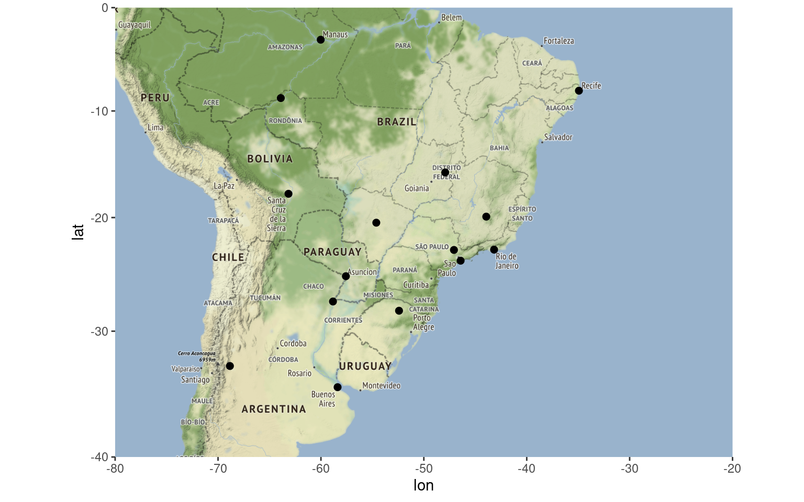
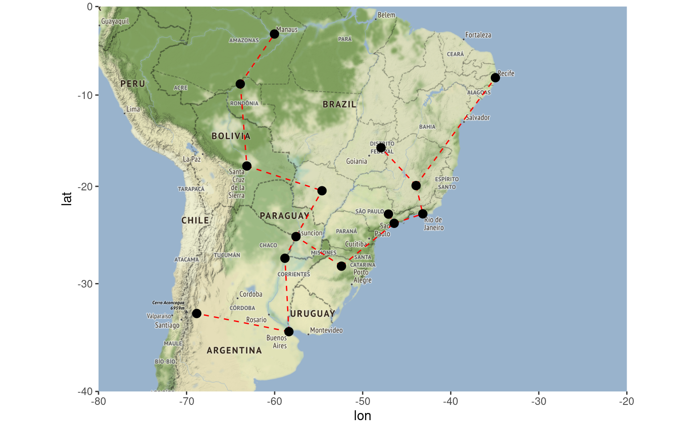
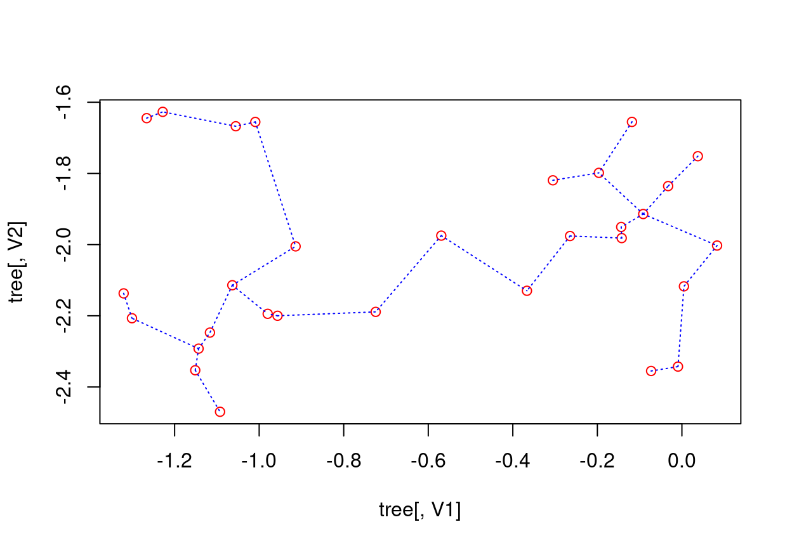
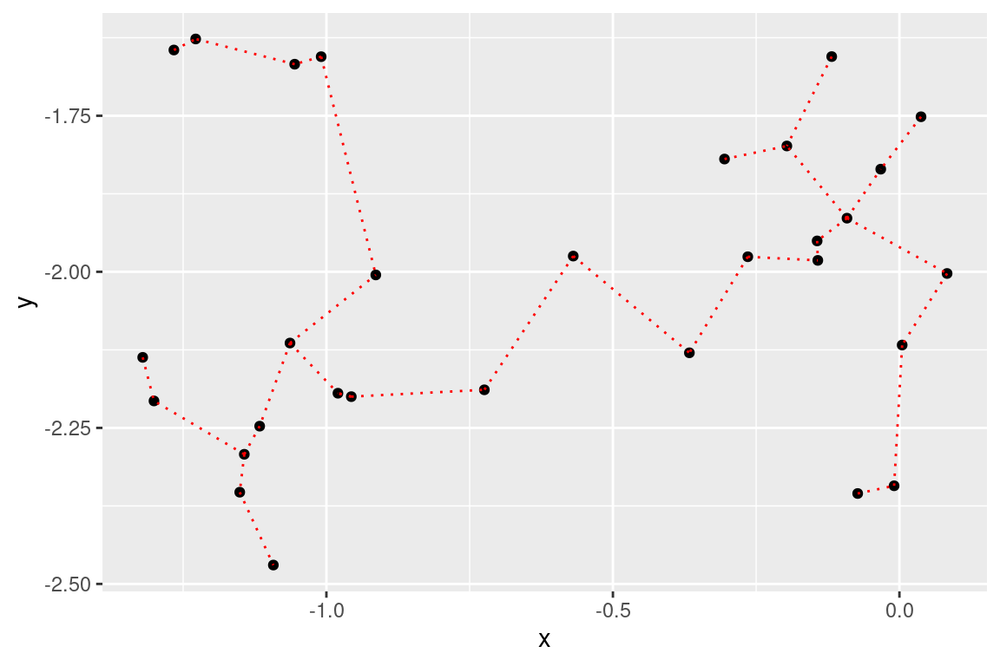
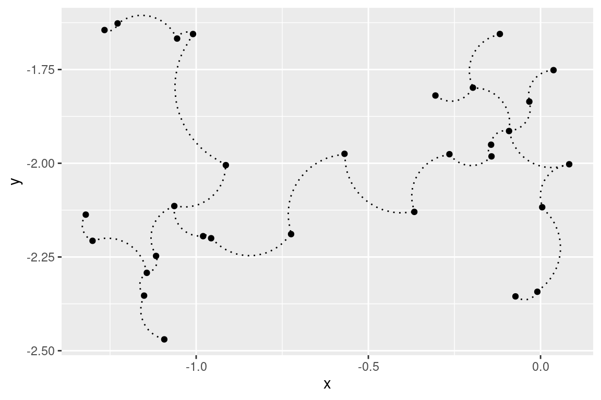
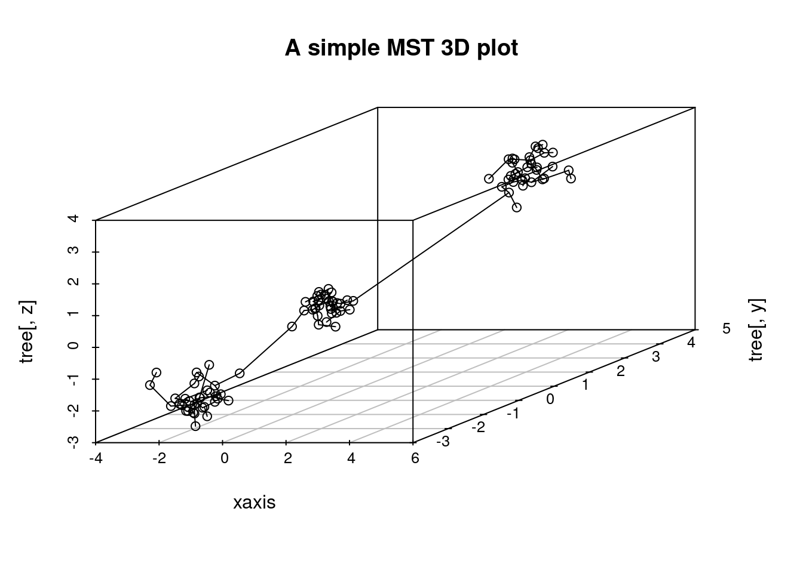

Announcing the new ‘emstreeR’ package (2020’s {ggmap} update)
I am proud to announce emstreeR - my first R package available on CRAN.
emstreeR is a package for fast and easily computing Euclidean Minimum Spanning Trees (EMST). It heavily relies on RcppMLPACK and Rcpp to work as wrapper to the EMST Dual-Tree Boruvka algorithm (March, Ram, Gray, 2010)[^1] implemented in ‘mlpack’ - the C++ Machine Learning library (Curtin et al., 2013)[^2]. With emstreeR, R users have access to the C++ fast EMST algorithm without having to deal with the R-Rcpp-C++ integration. The package also provides functions and an S3 method for readily plotting the Minimum Spanning Trees (MST) using either {base}, {scatterplot3d} or {ggplot2} style.
Working with emstreeR is easy because you just have to pass a matrix or data.frame of points as an argument to the main function computeMST() in order to get things working.
But, before we begin, what exactly is a Minimum Spanning Tree?
I will try to explain that without bringing any graph concept to the discussion.
Imagine you have to connect a group of South American cities with pipelines in order to distribute the natural gas extracted from an offshore platform on the coast of Rio de Janeiro. To optimize your operations, you need to know the most efficient route, i.e. the route that connects all the cities within the minimum possible distance. That optimal route among the cities is a Minimum Spanning Tree. Therefore, the MST problem is, in its essence, an optimization problem.
The distances between two points can be calculated using various methods, such as Manhattan, Euclidean, Minkowski, etc. This package uses Euclidean distances. Hence, the name Euclidean Minimum Spanning Trees.
So, let’s try to reproduce the aforementioned example.
First, we are going to use the {ggmap} package . We will pass the cities names as arguments to ggmap::geocode() function in order to get their latitude and longitude coordinates. For this, we need the Geocoding Google API. For more instructions on how to enable the API and how to obtain a API key, please refer to the documentation of the ggmap::register_goole() function.
library(ggmap)
## cities:
cities_location <- data.frame(location = c("Passo Fundo, Brazil",
"Buenos Aires, Argentina",
"Assuncion, Paraguay",
"Campinas, Brazil",
"Cubatao, Brazil",
"Mendoza, Argentina",
"Corrientes, Argentina",
"Porto Velho, Brazil",
"Manaus, Brazil",
"Santa Cruz de La Sierra, Bolivia",
"Belo Horizonte, Brazil",
"Brasília, Brazil",
"Rio de Janeiro, Brazil",
"Campo Grande, Brazil",
"Recife, Brazil"),
stringsAsFactors = FALSE)## register your Google API
register_google(key = rstudio::"AIza...8RLaPBOQ")## get latitude and longitude
geo_location <- geocode(cities_location$location)
## combine data:
df_location <- cbind(cities_location, geo_location)Let’s plot the map, so we can have an initial idea about what we are dealing with.
# coordinates for South America
map_grid <- c(left = -80, bottom = -40, right = -20, top = 0)
library(dplyr) # we wanna use pipes
get_stamenmap(map_grid, zoom = 5) %>% ggmap()+
geom_point(data = df_location,
aes(x = lon, y = lat), size=2)
Now is when emstreeR comes in handy. We pass the point columns as argument to computeMST() and it calculates the minimum route connecting all the points, i.e. the Euclidean Minimum Spanning Tree.
## MST:
library(emstreeR)
out <- ComputeMST(df_location[,2:3])## 9 edges found so far.
## 210 cumulative base cases.
## 0 cumulative node combinations scored.
## 12 edges found so far.
## 394 cumulative base cases.
## 0 cumulative node combinations scored.
## 14 edges found so far.
## 542 cumulative base cases.
## 0 cumulative node combinations scored.
## Total spanning tree length: 92.4247out## lon lat from to distance
## 1 -52.41028 -28.262260 4 5 1.157949
## 2 -58.38156 -34.603684 3 7 2.537402
## 3 -57.57593 -25.263740 11 13 3.085631
## 4 -47.07384 -22.932925 5 13 3.397372
## 5 -46.42441 -23.891615 3 14 5.632007
## 6 -68.84584 -32.889459 11 12 5.711987
## 7 -58.83063 -27.469213 1 3 5.972858
## 8 -63.90044 -8.761193 8 9 6.846781
## 9 -60.02173 -3.119028 2 7 7.148591
## 10 -63.15609 -17.814582 1 5 7.411688
## 11 -43.93449 -19.916681 10 14 8.939373
## 12 -47.92182 -15.826691 8 10 9.083937
## 13 -43.17290 -22.906847 2 6 10.603759
## 14 -54.62012 -20.469711 11 15 14.895331
## 15 -34.92861 -8.052240 1 1 0.000000As a result, we have a data.frame containing our original data and three more columns: from, to, and distance. This information is the Minimum Spanning Tree and will be used for plotting.
You can silence the output of the algorithm by setting verbose=FALSE in computeMST().
To better visualize the result, we plot the map again, but now using the {ggplot2}’s extension provided in emstreeR: stat_MST().
## Plot:
# we use the same grid map
get_stamenmap(map_grid, zoom = 5) %>% ggmap()+
stat_MST(data = out,
aes(x = lon, y = lat, from=from, to=to),
colour="red", linetype = 2)+
geom_point(data = out, aes(x = lon, y = lat), size=3)
Once you have the information about the minimum route, it is easy to see that you will have to install gas distribution hubs in cities that will have more than two incoming or outgoing links, such as Assuncion in Paraguay. Based on that information or other criteria such as connectivity or even by cutting the largest edge, you can also define or separate regions of operations. What I mean by this is that you can also use Minimum Spanning Trees in clustering problems. Nonetheless, let’s save that topic for another post.
Below, I will present other things you can do with ‘emstreeR’.
‘emstreeR’ provides an S3 method for the {base} function plot(). It is easy to make simple 2D plots with that.
## artifical data for 2D plots:
set.seed(1984)
n <- 15
c1 <- data.frame(x = rnorm(n,-0.2, sd=0.2), y = rnorm(n,-2,sd=0.2))
c2 <- data.frame(x = rnorm(n,-1.1, sd=0.15), y = rnorm(n,-2,sd=0.3))
d <- rbind(c1, c2)
d <- as.data.frame(d)
## MST:
#library(emstreeR)
out <- ComputeMST(d, verbose = FALSE) ## simple 2D plot:
plot(out, col.pts = "red", col.segts = "blue")
The stat_MST() extension also makes it easy plotting 2D plots, but using {ggplot2} as we showed before.
## 2D plot with ggplot2:
library(ggplot2)
ggplot(data = out, aes(x = x, y = y, from = from, to = to))+
geom_point()+
stat_MST(colour="red")
If you want something fancier, you can use the geom=curve argument:
## 2D plot with ggplot2:
#library(ggplot2)
ggplot(data = out, aes(x = x, y = y, from=from, to=to))+
geom_point()+
stat_MST(geom="curve")
You can also make 3D MST plots with emstreeR. It provides a wrapper for plotting 3D scatter plots, using the {scatterplot3d} package.
Let’s create 3D artificial data and compute the MST.
## artificial data for 3D plots:
n = 99
set.seed(1984)
d1<-matrix(rnorm(n,mean=-2,sd=.5), n/3, 3) # 3d
d2<-matrix(rnorm(n,mean=0,sd=.3), n/3, 3)
d3<-matrix(rnorm(n,mean=3,sd=.4), n/3, 3)
d<-rbind(d1,d2,d3) # just to show a matrix input
## MST:
library(emstreeR)
out <- ComputeMST(d, verbose = FALSE)We can do a simple 3D plot using the function plotMST3D().
## simple 3D plot:
plotMST3D(out, xlab = "xaxis", main="A simple MST 3D plot")
But, again, if you like fancier plots, we can also make an interactive 3D MST plot using {plotly}:
# some adjustments needed
ord_id <- Reduce(rbind, rbind(t(out[, c("from", "to")]), NA))
ord_data <- out[ord_id, c("V1", "V2", "V3")]
library(dplyr) # we will use pipes
library(plotly)
plot_ly(showlegend = T) %>%
add_markers(data=ord_data, x = ~V1, y = ~V2, z = ~V3,
marker=list(opacity=0.5, size=2.5), name="points") %>%
add_paths(data=ord_data, x = ~V1, y = ~V2, z = ~V3,
color = I("red"), name="edges")That’s all!
- CRAN version: https://cran.r-project.org/package=emstreeR
- Dev version: https://github.com/allanvc/emstreeR
References
[^1] March, W. B., and Ram, P., and Gray, A. G. (2010). Fast euclidian minimum
spanning tree: algorithm analysis, and applications. 16th ACM SIGKDD
International Conference on Knowledge Discovery and Data mining, July
25-28 2010. Washington, DC, USA. doi:10.1145/1835804.1835882.
[^2] Curtin, R. R. et al. (2013). Mlpack: A scalable C++ machine learning
library. Journal of Machine Learning Research, v. 14, 2013.